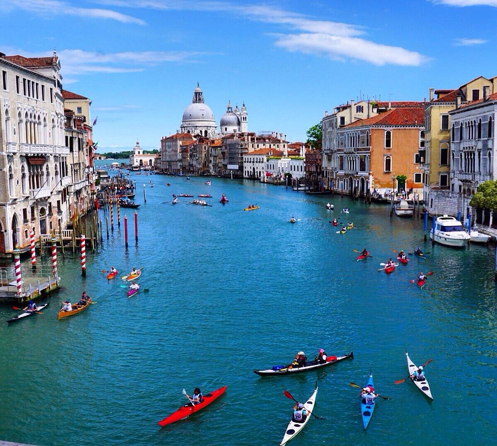
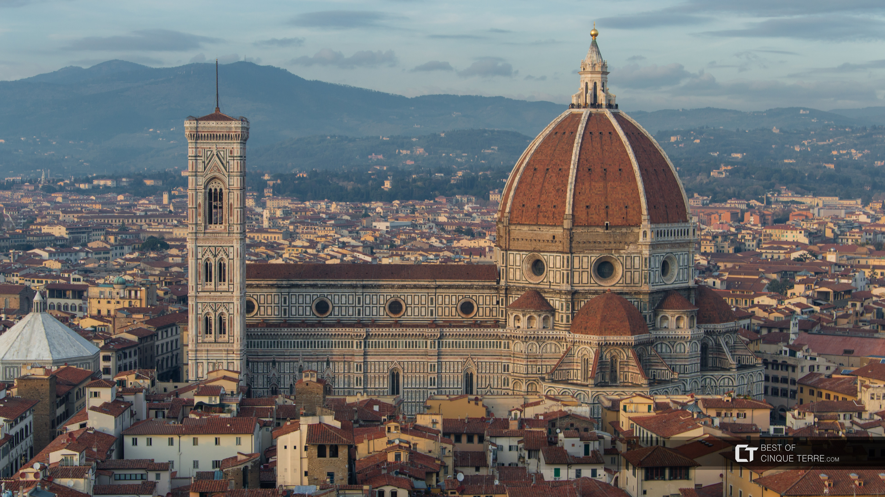
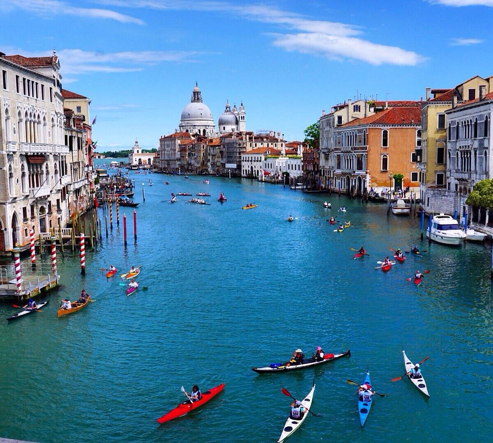
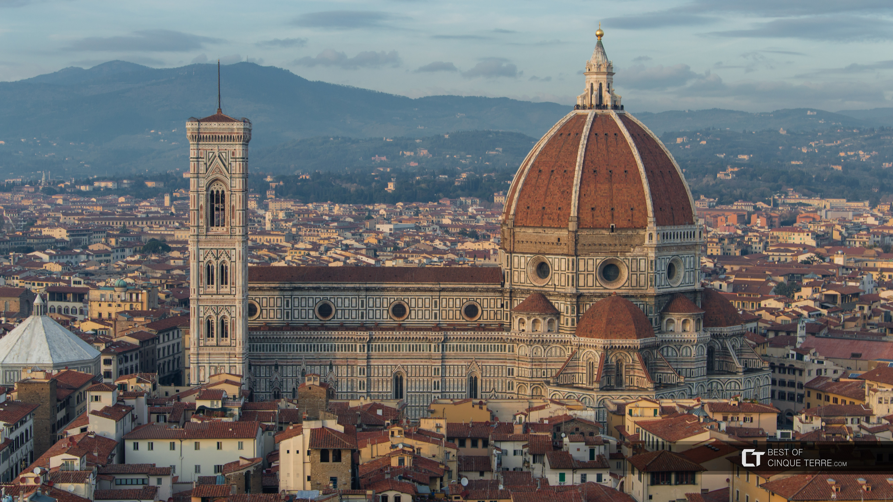

Italy, a country rich in history and natural beauty, invites you to explore its captivating blend of the old and the new. From ancient cities steeped in legend to scenic coastlines and charming villages, Italy is a destination where every traveler finds something to love.
1
/
n
 



Step into the heart of ancient Rome with a visit to the Colosseum, the largest amphitheater ever built. Once home to gladiator battles and grand spectacles, it’s a powerful reminder of the empire’s architectural brilliance and dramatic history.